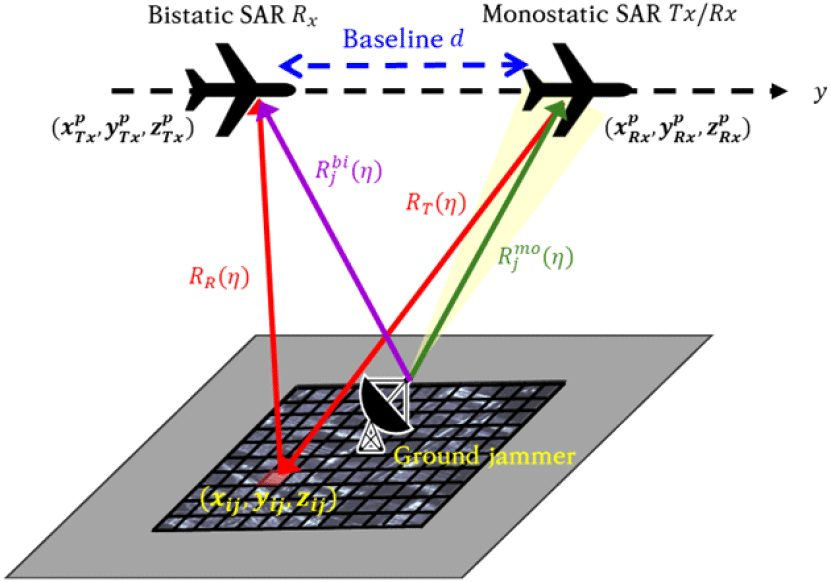

연구 과제
국방특화연구실 "차세대 SAR 연구 - 2단계" (연구실장)

개요
한국항공대 SATECS 연구실이 연구실장을 맡은 국방특화연구실 '차세대 SAR 연구'는 ① 바이스태틱/멀티스태틱 SAR(위성·항공기·드론 등 다중 플랫폼 영상 형성으로 관측 범위 확대·표적 품질 개선), ② 압축센싱 SAR(플랫폼 요동·재밍에 의한 데이터 손실 하에서 화질·실시간성 유지, 초고해상도 자동초점), ③ Video SAR(실시간 고품질 처리, 대용량 데이터 저장·압축, AI 기반 GMTI·표적 인식)의 3개 세부 과제를 수행하며, 미래 전자전에서 고해상도 SAR 기반 광역 감시망을 실시간으로 구현하는 것을 목표로 한다. 2단계(2022–2025)에 해당하는 시기의 성과로는 바이스태틱 SAR의 송수신 분리 특성을 이용해 재밍 신호를 억제하고 압축센싱으로 손실 데이터를 복원하는 연구(2024), 2채널 SAR 위상 지도에 YOLO를 적용한 지상 이동 표적 탐지 연구(2025, 중앙대 공동)가 방사청·국방과학연구소 과제 사사로 발표되었다.
주요 내용·성과
- 바이스태틱 SAR 재밍 억제 및 압축센싱 기반 신호 복원·품질 개선: 모노스태틱 대비 재밍 영향 영상 복원 성능 개선 (최민호·이희우·최지훈·이우경, 한국전자파학회논문지 35(11):929, 2024.11.30, 사사 UI4111J5-911256202)
- YOLO 기반 2채널 SAR GMTI: 기존 DPCA/ATI+CFAR 대비 SCNR 5 dB에서 탐지율 15%p 이상 개선, 0 dB 이하에서도 90% 이상 탐지 (박찬울·이호정·이우경·이성욱(중앙대), 한국전자파학회논문지 36(2):179–190, 2025.02.28, 사사 UI5111J5-911256202)
- 특화연구실 3개 세부 연구 주제(바이스태틱/멀티스태틱 SAR, 압축센싱 SAR, Video SAR) 및 목표 — 연구실 공식 페이지
- 특화연구실 소개 기사: 이우경, "차세대 SAR 국방특화연구실 소개", 전자파기술 31(6), pp. 25–32, 2020.11 (1단계 시기 발간)